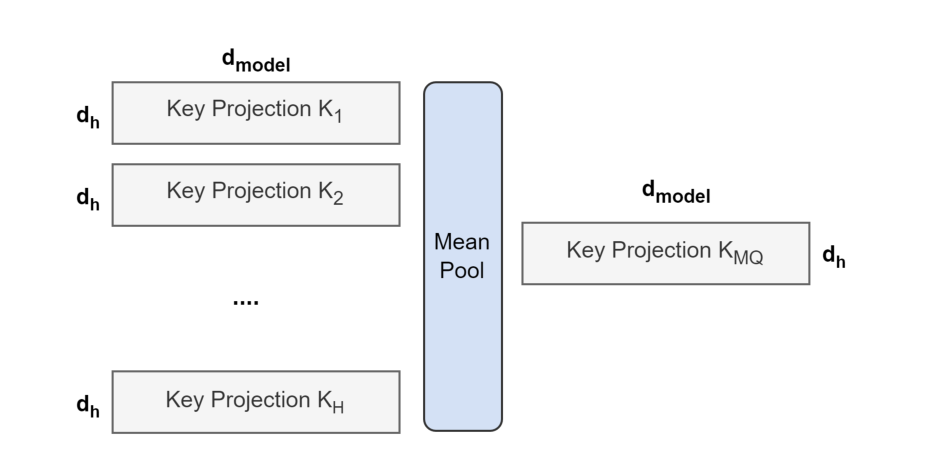
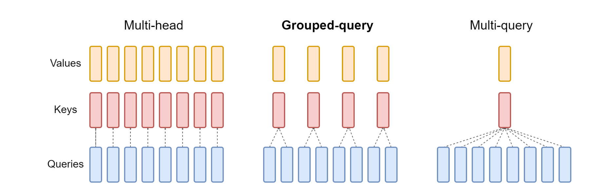
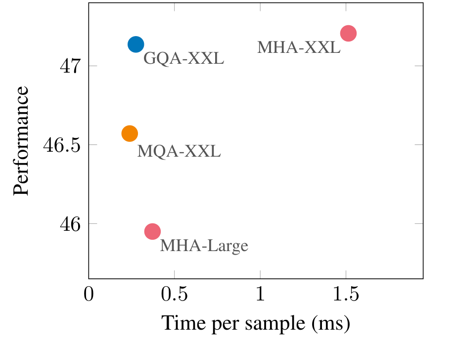
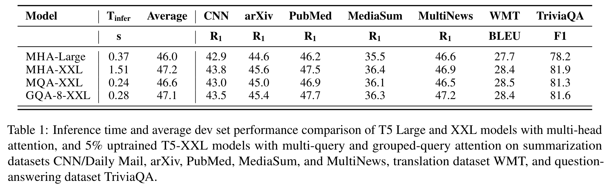
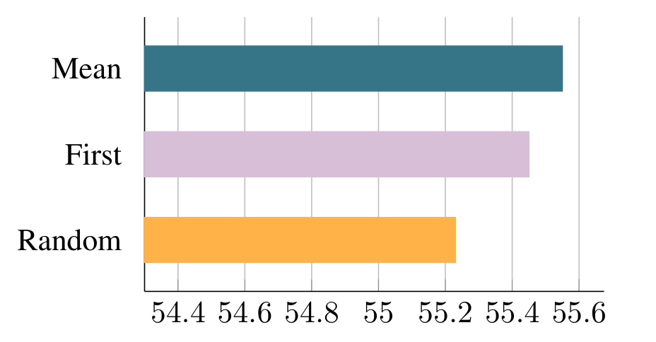
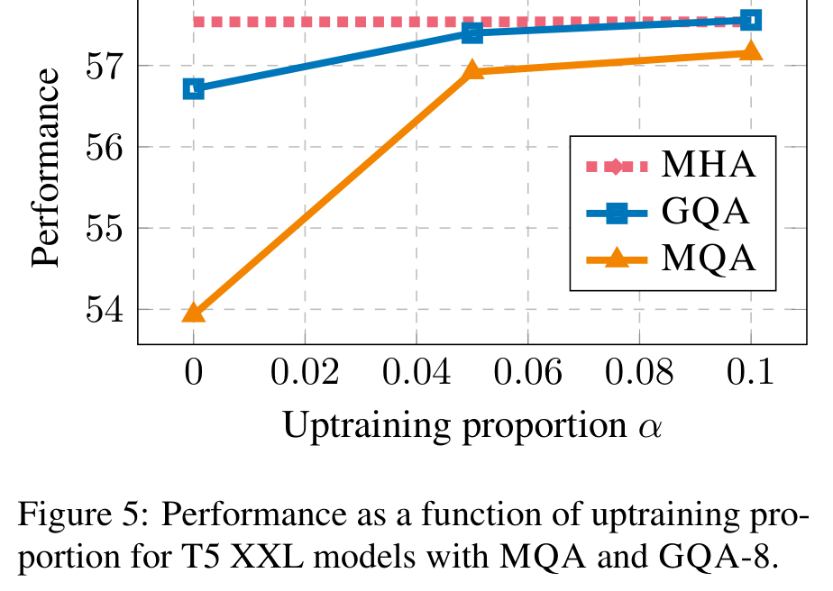
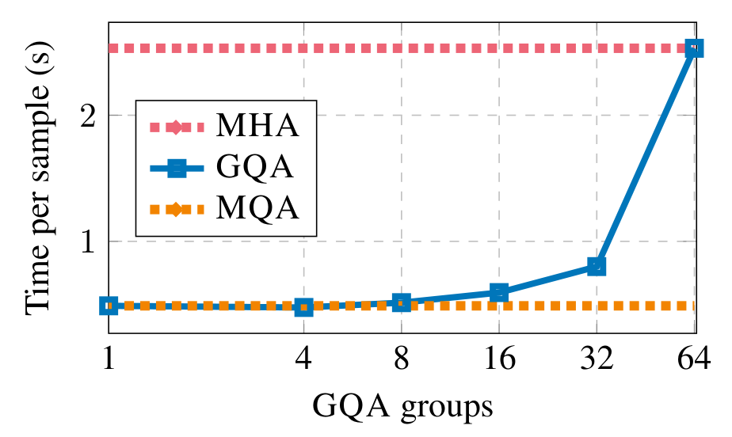

PAPER READINGS / 2023 · EMNLP / READ 2026-10-27
GQA：让 Query 保留多样性，让 KV 共享历史
一句话：GQA 保留全部 Query heads，只让每组 Query 共享一个 Key/Value head，并通过组内平均 checkpoint 加继续预训练，把已有 MHA 模型转换到更省 KV 读取的推理结构。
Paper Metadata
原论文：GQA: Training Generalized Multi-Query Transformer Models from Multi-Head Checkpoints。Joshua Ainslie、James Lee-Thorp、Michiel de Jong、Yury Zemlyanskiy、Federico Lebrón、Sumit Sanghai；Google Research，de Jong 来自 USC，工作在 Google Research 完成，前三位作者同等贡献。首次提交 2023-05-22，本次精读本地 v3，2023-12-23，7 页；EMNLP 2023，会议论文页 4895–4901。[1][2]
Paper PDF · arXiv · ACL / DOI · Conference video · Flaxformer
Reading：2026-10-27 / Last Updated：2026-10-28。 全部 6 张原始 Figure、1 张完整 Table、Appendix A 均保留并解析。图片仅包含图区或表格，原论文 Caption 与中文说明以图外可复制文字呈现。原论文没有编号公式；本文数学块都是明确标记的讲解推导。没有确认独立 supplementary、slides 或 project page。论文链接 Flaxformer，且致谢 Rabe 独立开发的 GQA 实现；这不等于作者公开了完整 uptraining 与 benchmark 复现仓库。[1][3]
正文按原文 §1 Introduction → §2 Method → §3 Experiments → §4 Related Work → §5 Conclusion → Limitations → Appendix A 推进；之后是扩展调研、工程实现和个人判断。Paper Fact 来自原文，External Source 来自链接的一手资料，Interpretation / Agent-created Visualization 是本文重构。容量推导、本地机制检查、作者测得的耗时和真正端到端复现，是不同层次的证据。
TL;DR：问题、方法与结果放在同一条链上
一段话。 自回归 decode 每次产生很少的 Query，却要读取越来越长的历史 KV。MHA 的每个 Query head 都保留独立 KV，MQA 让所有 Query 共享唯一 KV，前者代价高，后者转换过于激进。GQA 在二者之间设置 group 数 G：组内共享、组间独立；平均合并原有 K/V 权重，然后用原预训练 recipe 继续训练。T5-XXL 的 GQA-8 在七任务混合平均指标上为 47.1，MHA-XXL 为 47.2，MQA-XXL 为 46.6；对应作者资源归一化推理时间为 0.28、1.51、0.24 秒。[1]
五个关键点：
- 共享的是 K/V，不是 Q。 H 个 Query heads 都在，G 个 KV heads，每个 KV 服务 H/G 个 Query。
- 转换不是无损压缩。 组内平均保留线性投影的均值，但 softmax 的非线性让原函数不能被原样保留；uptraining 负责适应结构变化。
- 主要收益是减少历史状态。 逻辑 KV 容量降到 G/H；dense attention 的 score 数和主要 QK/PV 算术仍按 H 缩放。
- 论文证明了具体配置的实用折中。 5% 是本实验继续预训练预算；8 groups 是作者选择的中间配置，都不是普适定理。
- 实际收益取决于系统。 分片是否复制 KV、kernel 是否真正复用、batch 与长度、权重读取占比，决定容量节省能转化多少端到端收益。
1. Introduction：每一步只问一个问题，却重读所有历史
问题发生在 decode 的哪一段？
以 decoder-only 自回归模型为例，prefill 对完整输入并行计算 Q/K/V；进入 decode 后，每一步的新 token 只产生一个位置的 Q，而这个 Q 仍要与全部历史 K 比较，再读取 V 加权汇总。历史长度 S 增长，KV Cache 也增长。缓存避免重新算历史 K/V，却没有消除每轮访问历史状态的成本。
原文将 decoder 推理瓶颈归于读权重与 KV 的内存带宽。[1] 这在小 batch、长上下文等条件下很有解释力；是否主导某台硬件的全链路时间，仍要测量。短上下文可能由权重读取或调度占主导；大 batch 会提高权重复用，prefill 则可能更受矩阵计算影响。
MHA → MQA 的收益为何伴随风险？
MHA 给不同 Query 独立的 Key 匹配空间和 Value 内容空间。MQA 保留不同 Query，却只给它们一份共同历史表征。减少了状态冗余，也减少了可独立表达的信息。论文观察到 MQA 可能损失质量，并且 T5 的长输入训练可能不稳定；这是实验现象，不是“所有 MQA 都不稳定”的结论。
已经有昂贵的 MHA checkpoint 时，重新预训练一套 MQA 模型并不总是现实。本文组合了两个问题：怎样复用已训练知识？共享多少 KV 才合适？ 前者由 uptraining 解决，后者由 GQA 结构解决。仅把 GQA 解释成“MQA 的折中版本”，会漏掉 checkpoint 迁移这一半贡献。
一个具体 mental model
把 Q 想成多个检索员的不同问题，K 是历史条目的索引，V 是条目的内容。MHA 每个检索员维护独立索引和内容；MQA 全部共用一套；GQA 让几个检索员共用一套，但不同组还有独立表征。每个人仍计算自己的匹配分数，因此“共用历史”不代表“问相同的问题”。
2. Method：先迁移 checkpoint，再学习共享表示
2.1 Uptraining：组内平均是初始化，继续预训练是适应


从 multi-head 转换到 multi-query attention 的流程。所有 head 的 Key 和 Value 投影矩阵分别取均值，合并成单个 head。
原论文 Caption（可复制）
Overview of conversion from multi-head to multi-query attention. Key and value projection matrices from all heads are mean pooled into a single head.
这张图解决什么问题？ 从已有 MHA 权重得到可用的 MQA 权重，而不是从随机初始化重训。如何阅读？ 左侧是已训练 checkpoint 的多个 KV 投影，中间进行 mean pooling，右侧是结构变小后的 checkpoint；再沿训练步骤继续预训练。图讨论的是权重迁移，不是把已经运行中的 KV Cache 做平均后直接接着生成。
Components / Data Flow。 输入包括原模型参数、目标 G、原预训练数据与 recipe。对 K 和 V 的投影矩阵分别分组求均值；Query 和 output 投影在初始化时保留原样，其余模型参数也继承。然后继续预训练整个转换后的模型。论文没有要求冻结 Q、O 或 FFN。
Key Observation。 平均合并比选一个 head 或随机新建 KV 的起点更好；Figure 4 提供消融。Why It Matters。 能得到新的推理结构而不重付完整原始预训练费用。Interpretation。 把多个专家的记忆变成共享记忆，先取其均值，再让整个网络重新适应。
设输入宽度 D，Query heads 为 H，每 head 宽 d，目标 KV heads 为 G，r=H/G。以下采用输入行向量右乘权重的约定：
LaTeX source
\bar W^K_g = \frac{1}{r}\sum_{j=0}^{r-1} W^K_{gr+j},\qquad \bar W^V_g = \frac{1}{r}\sum_{j=0}^{r-1} W^V_{gr+j}这里每个 WKh 和 WVh 为 D×d。完整旧权重是 [D,H,d]，reshape 到 [D,G,r,d]，沿 r 求平均后得到 [D,G,d]。若框架存 [out,in]，须先确认 head 轴，不能直接沿任意 axis 求均值。T5 attention 没有这里所说的投影 bias；迁移其他带 bias 的架构时，bias 也要一致分组。
为什么看起来合理，却不保证等价？ 对同一个 x，x·mean(W)=mean(x·W)，因此新 K/V 等于旧投影输出的组内均值。但是原每个 Q 有自己的 softmax(QKᵀ)，而“softmax 的平均”不等于“平均后的 softmax”。即使只改 K，匹配分布也变了；同时改 V 又会改变加权内容。没有一般的代数恒等式把所有旧 attention outputs 保留。
Toy Example。 两个 head 的某条 K 权重分别为 [1,3]、[3,5]，共享权重是 [2,4]。这对线性投影成立；若两套 K 曾让同一个 Q 分别偏好不同 token，平均 K 可能让分布变平，而不保留两个检索结果。


Training Pipeline。 原 T5.1.1 checkpoint → 改 decoder self/cross attention 的 K/V → 原 recipe 继续预训练 α 比例原始 steps → 各任务单独微调 → greedy inference。α 是继续预训练比例，论文主要用 0.05，也比较 0 和 0.1。α=0 只是不做这一段额外预训练，仍有下游微调，不能读成“所有训练都没做”。
Loss / Objective。 继续预训练沿用 T5 原数据与 span-corruption 预训练 recipe；decoder 对目标 token 做预测，本文没有新增蒸馏项、head matching loss 或 cache loss。一般的教师强制 token objective 可写成以下讲解式：
LaTeX source
\mathcal L(\theta)=-\sum_t \log p_\theta(y_t\mid x,y_{<t})这里 x 是 encoder 输入，y 是 decoder 目标序列，θ 包括转换后全模型可训练参数。目标是适应共享结构的预测分布，不是让 pooled 权重精确重建原权重。论文使用 Adafactor，沿用 T5 超参数和 LR schedule；没有给出一套独立的低成本 adapter 方案。[1]
2.2 Grouped-query attention：G 是 KV groups，不是每组 Query 数


Grouped-query 方法概览。MHA 有 H 个 Query、Key 和 Value heads；MQA 的全部 Query 共享单个 Key head 和 Value head；GQA 则让每组 Query 共享单个 Key head 和 Value head，在 MHA 与 MQA 之间提供不同的共享粒度。
原论文 Caption（可复制）
Overview of grouped-query method. Multi-head attention has H query, key, and value heads. Multi-query attention shares single key and value heads across all query heads. Grouped-query attention instead shares single key and value heads for each group of query heads, interpolating between multi-head and multi-query attention.
目的与读法。 从 MHA、GQA、MQA 三个结构比较 Query 到 KV 的连接。图中的 Query 分支数量保留；变化的是下面的 K/V 共享粒度。沿一个 Query 往下追踪，找到它连接的 KV，再看相邻 Query 是否共用同一个 KV。
Components / Data Flow。 每个 Query 依然产生独立 attention score 和输出。组内 Query 使用共同 K、V，组间使用不同 K、V；所有 H 个输出最后 concat 并经过 WO。Key Observation。 GQA-1=MQA，GQA-H=MHA。Why It Matters。 G 是连续技术路线上的可选离散旋钮，容量与读取成本有可调空间。
容易混淆的记号。 H=32、G=8，意味着 8 个 KV heads，4 个 Query / KV。不意味着 8 个 Query / KV，也不意味着把 32 个 Q 合并成 8 个 Q。规则分组通常要求 H 能整除 G，具体 checkpoint 使用固定 head 顺序。后续 AsymGQA 放宽规则分组，这是另一种结构。[6]
| Tensor / Parameter | Shape | 解释 |
|---|---|---|
| 输入 Xq / Xkv | [B,Tq,D] / [B,Tk,D] | self attention 来自同一序列；cross attention 来自不同序列 |
| Q | [B,Tq,H,d] | Query 数量不变 |
| K、V | [B,Tk,G,d] | KV 数量减少 |
| grouped Q | [B,Tq,G,r,d] | 把 head 轴拆成 group 与组内 Query |
| attention scores / probabilities | [B,G,r,Tq,Tk] | 每个 Q 仍有自己的分布 |
| grouped output | [B,Tq,G,r,d] | 每个 Q 都保留输出 |
| concat / WO | [B,Tq,Hd] / [Hd,D] | 输出投影不按 G 缩小 |
| WQ / WK,V | [D,Hd] / [D,Gd] | 输入宽度 D 不必等于 Hd |
令 g(h)=⌊h/r⌋。通用 scaled dot-product attention 的讲解重构为：
LaTeX source
A_h=\operatorname{softmax}\left(\frac{Q_hK_{g(h)}^\top}{\sqrt d}+M+R_h\right),\qquad O_h=A_hV_{g(h)}Qh 为 [B,Tq,d]，Kg 和 Vg 为 [B,Tk,d]，QKᵀ 为 [B,Tq,Tk]；M 是可见性 mask，Rh 是可选位置偏置。softmax 沿 Tk。共享 K/V 不会强制 Ah 相同，因为 Qh 不同。T5 有 relative position bias，且其 attention scale 在初始化约定中处理；不能把通用的 1/√d 机械重复加入实际 T5 实现，更不能把 T5 写成 RoPE 模型。[3]
# 教学伪代码：native grouped contraction；非完整 T5 实现
# Q: [B,Tq,H,d]; K,V: [B,Tk,G,d]; r=H//G
qg = Q.reshape(B, Tq, G, r, d)
scores = einsum("btgrd,bsgd->bgrts", qg, K)
scores = scores * scale + position_bias + mask
probs = softmax(scores, axis=-1) # Tk axis
out = einsum("bgrts,bsgd->btgrd", probs, V)
out = out.reshape(B, Tq, H*d) @ W_O
输入与输出。 这里 t 是 Query 位置，s 是 KV 位置，r 是组内 Query 轴；einsum 直接复用 K/V，而不是构建 H 份持久 KV。输出还原 H 个 head。复杂度。 dense scores 的元素数是 B·H·Tq·Tk；是否实际 materialize 这一张矩阵，由 FlashAttention 等 kernel 决定，而不是 GQA 定义决定。
逻辑容量、算术与带宽：必须分开核算
设 L 为 decoder layers，B 为 batch，S 为缓存长度，p 为每元素字节数，d 为 head dim。decoder-only self-attention 的逻辑 K+V cache：
LaTeX source
C_{\rm KV}=2LBSGdp,\qquad \frac{C_{\rm GQA}}{C_{\rm MHA}}=\frac GH2 表示 K 和 V 两份；只要 L/B/S/d/p 固定，容量随 G 线性变化。T5 还需 decoder cross-attention 的 encoder K/V：在相同 KV 宽度下，总逻辑 cache 为 2·Ld·B·G·d·p·(Sself+Senc)。encoder 输出可一次投影为 cross KV，但 decoder 每步仍访问它；encoder self-attention 不属于持久的 decode cache。论文只把 GQA 用在 decoder self 与 cross attention。
每个 attention block 的投影参数从 4DHd 变为 2DHd+2DGd：Q/O 不变，K/V 减少。这不是整个模型参数量的 G/H，因为 FFN、embedding 等还在。dense QK 与 PV 的主要算术约 4BTqTkHd FLOPs，G 不直接把它除以 r。decode 理想复用时，每组 KV 服务 r 个 Query，忽略其他读写的 attention 算术强度约 2r/p FLOP/byte；这是 IO 模型，不是硬件实测值。
Interpretation。 GQA 更像改变“每轮读取多少独立历史”的表示结构，而不是减少所有 Query 的计算。若将 K/V repeat 到 H 再存进 cache，架构的状态节省就被抵消；若只在某个临时路径展开，则仍可能省持久内存，但多了临时 IO 和分配成本。native grouped kernel 要把共享真正传递到底层。[3][4][5]
多卡分片：逻辑只剩一份，物理可能复制八份
原文指出，标准模型分片常复制 MQA 的单个 KV head。用 P 路 tensor parallel 的规则 head 分片教学模型看：G≥P 且 G 能整除 P 时，每 rank 有 G/P 个 KV；G<P 且 P 能整除 G 时，通常每 rank 至少一份 KV，共享 group 被复制。全球物理 group 计数为 max(G,P)。这不是所有分片实现的通用定律，排除了更细粒度 channel/sequence sharding 等策略。
例如 H=64、P=8：MQA 的 G=1 逻辑状态最少，但若每 rank 一份，物理共 8 份；GQA-8 可给每 rank 一个不同 KV，总状态同样是 8 个 group。此时可以用接近的物理状态换回更多表示容量。后续 Llama 2 在 8×A100 的实验明确报告 MQA 被复制八路，与 GQA-8 cache 大小及吞吐相近。[7] 它支持特定分片条件下的解释，不证明所有 GQA 都自动免除复制。
Agent-created Interactive · Query grouping
32 个 Query，究竟共用几份历史？
调整 G 看 head 映射。每组有独立编号，连到同组 KV 的 Query 仍产生不同分数。
Agent-created Interactive · Analytical cache model
从逻辑 KV 到 TP 物理账本
采用已核验 Qwen3-8B：L=36，H=32，d=128。默认 G=8 是模型真实配置；其他 G 是控制变量的假想结构。所有数值是容量推导，未包含权重、工作区、量化 scale、padding 和 allocator。[8]
低位 storage 只改变字节数，不模拟精度、量化误差或吞吐。TP 使用上文规则 head 分片假设。
3. Experiments：先读计时定义，再读“快了多少”
3.1 Experimental setup：T5 encoder-decoder，不是现代 decoder-only benchmark
| 项目 | 原论文与可核验配置 | 审计含义 |
|---|---|---|
| 模型 | T5.1.1 Large、XXL；XXL MQA / GQA-8 从公开 MHA checkpoint uptrain | 主结果没有 matched scratch GQA-XXL |
| 注意力改动 | decoder self + cross；encoder self 不改 | encoder 算术不因 GQA 直接变少 |
| 实现 | JAX、Flax、Flaxformer；Adafactor 与 T5 recipe | 当前代码不等于冻结的 2023 benchmark |
| 预训练预算 | α=0.05；约 600 TPUv3 chip-days | 芯片×天，不是 600 天墙钟；5% 不含原 checkpoint 成本 |
| 任务微调 | LR=0.001，batch=128，dropout=0.1；训练至收敛，选最高 dev checkpoint | 质量包含完整下游适应 |
| timing | 8 TPUv4，batch 尽量大，最多每芯片 32；各模型单独优化 parallelization；xprof | 资源归一化实际配置比较，不是固定 batch 的纯算子对照 |
| 解码 | greedy decoding | 不代表 beam search、采样或 serving continuous batch |
| 精度 / 分片细节 | 主文未明确给出精度、逐模型 batch 与 shard 配置 | 无法据论文独立重算真实内存和 latency decomposition |
官方 T5x 配置给出的 XXL 是 D=4096、H=64、d=64，encoder 与 decoder 各 24 层；Large 是 D=1024、H=16、d=64，也各 24 层。[9] XXL 的 Hd=4096；这个关系不能外推到所有模型。Qwen3-8B 同样 D=4096，却是 H=32、d=128、L=36。[8] 头数与宽度必须读真实 config。
| Dataset | 输入 / 输出最大长度 | Metric | ↑ 的含义 |
|---|---|---|---|
| CNN/Daily Mail | 512 / 256 | ROUGE-1 | 摘要 unigram 重叠分数更高 |
| arXiv、PubMed、MediaSum、MultiNews | 2048 / 512 | ROUGE-1 | 同上，不是事实正确率 |
| WMT 2014 En→De | 512 / 256 | BLEU | 翻译 n-gram 重叠质量 |
| TriviaQA | 2048 / 32 | answer token F1 | 预测答案与参考答案 token 重叠 |
TriviaQA 的 Precision / Recall 分别以预测与参考答案 token 数为分母，F1 为调和均值；它不是二分类的 TP/FP/TN/FN 表。论文没有报告分类 Accuracy、confusion matrix 或 F1 的 P/R 分解，不能由 Table 1 反推出这些指标。
Fairness Audit。 相同 T5 家族、预训练来源、任务与微调规则有助于比较。但是 K/V 投影参数随 G 改变，各模型 batch 和 parallelization 单独优化；这是“可部署质量—耗时 frontier”的比较，而不是只改一个参数、所有其他执行条件固定的机制实验。预训练 token 绝对数、训练新增总 FLOPs、精度、每模型 batch、shard 方案、通信时间、峰值 cache 字节和 per-op 耗时未完整列出；这里保留未报告项。
3.2 Main results：整体接近，不代表每个任务都接近同样程度


作者报告：uptrained MQA 相比 MHA-Large 质量更高、推理更快；GQA 在获得相近速度收益的同时进一步提升质量，接近 MHA-XXL。横轴是每个样本的平均推理时间，纵轴是全部任务的平均表现；比较 MHA T5-Large、MHA T5-XXL，以及经过 5% uptraining 的 MQA 和 GQA-8 T5-XXL。原图横轴单位与 Table 1 冲突，见下文勘误。
原论文 Caption（可复制）
Uptrained MQA yields a favorable tradeoff compared to MHA with higher quality and faster speed than MHA-Large, and GQA achieves even better performance with similar speed gains and comparable quality to MHA-XXL. Average performance on all tasks as a function of average inference time per sample for T5-Large and T5-XXL with multi-head attention, and 5% uptrained T5-XXL with MQA and GQA-8 attention.
目的。 大模型减少 KV 后，能否比小 MHA 同时更快、质量更高？读法。 横轴越小越快，纵轴越高平均分越高；不要把两轴当成独立“排名”。先看 MHA-Large 与 MHA-XXL 的规模代价，再看同为 XXL 的 MQA / GQA。
Components / Data Flow。 四个点来自经过各任务微调的模型，将七任务指标与平均 timing 汇总；它不是某个 token 的逐步解码轨迹。Key Observation。 GQA-8-XXL 接近 MHA-XXL 的平均质量，时间接近 MQA-XXL。Why It Matters。 支持保留大模型计算容量、缩减独立 KV 表征的实用方案。
Table 1：完整原表与可复制转录


推理时间与开发集平均表现的完整对比：MHA T5-Large、MHA T5-XXL，以及经过 5% uptraining 的 MQA 和 GQA T5-XXL。任务覆盖 CNN/Daily Mail、arXiv、PubMed、MediaSum、MultiNews 摘要，WMT 翻译与 TriviaQA 问答。全部行列、指标和单位保留；原表没有结果单元格粗体、下划线、箭头或脚注。
原论文 Caption（可复制）
Inference time and average dev set performance comparison of T5 Large and XXL models with multi-head attention, and 5% uptrained T5-XXL models with multi-query and grouped-query attention on summarization datasets CNN/Daily Mail, arXiv, PubMed, MediaSum, and MultiNews, translation dataset WMT, and question-answering dataset TriviaQA.
| Model | Tinfer (s) | Average | CNN/Daily Mail R1 | arXiv R1 | PubMed R1 | MediaSum R1 | MultiNews R1 | WMT BLEU | TriviaQA F1 |
|---|---|---|---|---|---|---|---|---|---|
| MHA-Large | 0.37 | 46.0 | 42.9 | 44.6 | 46.2 | 35.5 | 46.6 | 27.7 | 78.2 |
| MHA-XXL | 1.51 | 47.2 | 43.8 | 45.6 | 47.5 | 36.4 | 46.9 | 28.4 | 81.9 |
| MQA-XXL | 0.24 | 46.6 | 43.0 | 45.0 | 46.9 | 36.1 | 46.5 | 28.5 | 81.3 |
| GQA-8-XXL | 0.28 | 47.1 | 43.5 | 45.4 | 47.7 | 36.3 | 47.2 | 28.4 | 81.6 |
如何阅读？ Tinfer 越低越好，各任务指标越高越好。Average 是 ROUGE、BLEU、F1 混合的算术平均，不是统一标定的 Accuracy。0.1 分不是某个共同概率意义的 0.1 个百分点精度变化。
与最强质量 baseline MHA-XXL 比较。 GQA 的 Average 低 0.1，4 个任务低于 MHA（CNN −0.3、arXiv −0.2、MediaSum −0.1、TriviaQA −0.3），WMT 持平，PubMed +0.2、MultiNews +0.3。平均看接近，但没有每任务全面领先。
与最快 MQA-XXL 比较。 GQA 平均 +0.5；耗时增加 0.04 s，即 16.67%。七任务有六项提高，WMT 低 0.1。保留更多 KV 表征在这里改善质量，同时付出小幅 timing 成本。
Absolute / Relative Improvement。 按印刷表的已舍入时间，GQA 相对 MHA-XXL 是 1.51/0.28=5.39×，耗时下降 81.46%；相对 MHA-Large 是 0.37/0.28=1.32×，平均指标 +1.1。这里的倍率仅适用作者 timing 定义，不能直接写成同一请求的 TTFT 或 TPOT 提升。
舍入边界。 原源码 Figure 3 的 GQA Average=47.136、MHA=47.206，差为 −0.070；Table 1 只印一位小数。直接把七个已舍入 GQA 分数平均会得到约 47.157，不能据此“修正”原表 47.1。来源精度不同，应并列保留，不制造更多有效数字。[1]
Trade-off。 5% uptraining 和微调成本不是免费；速度配置单独优化；没有误差条或显著性检验。可以说“该混合指标接近 MHA”，不能说“质量保证达到 MHA 的 99.8%”，更不能把此百分比当作所有任务的能力保留率。
3.3 Ablations：三张图分别验证起点、预算和推理旋钮
Figure 4 — 如何合并旧 KV heads？


T5-Large 转换为 MQA 并进行 α=0.05 uptraining 后，不同 checkpoint 转换方法的表现对比。Mean 对 Key 和 Value heads 分别取均值；First 选择第一个 head；Random 从随机初始化开始。
原论文 Caption（可复制）
Performance comparison of different checkpoint conversion methods for T5-Large uptrained to MQA with proportion α=0.05. ‘Mean’ mean-pools key and value heads, ‘First’ selects the first head and ‘Random’ initializes heads from scratch.
问题与读法。 在 T5-Large、5% uptraining、CNN/MultiNews/TriviaQA 子集平均下，看转换初始化是否影响最终质量。比较三个点的纵坐标，而不是把它们与 Table 1 的七任务平均混在一起。
Components / Data Flow。 Mean 保留全部旧 KV 的均值；First 只选一个；Random 丢弃其预训练 KV 信息。三条转换后都进入适应训练，再做任务评估。源码对应 Mean=55.55、First=55.45、Random=55.23。
Key Observation。 Mean 排第一，比 First +0.10、Random +0.32。Why It Matters。 支持默认使用简单平均，且成本低。Interpretation / Caveat。 与“保留更多旧信息”的直觉一致，但差值小且没有重复实验误差条；不能把它扩大成均值初始化永远最优，也不能将差异全部归因于一个被证明的机制。
Figure 5 — 5% uptraining 到底恢复了多少？


MQA 与 GQA-8 T5-XXL 的表现随 uptraining 比例的变化。图中的三任务子集平均与主表七任务平均不直接比较。
原论文 Caption（可复制）
Performance as a function of uptraining proportion for T5 XXL models with MQA and GQA-8.
问题。 更温和的 KV 共享是否降低结构适应难度？读法。 先看 α=0 的两种转换差异，再看 0→0.05 的收益，最后看 0.05→0.1 的边际收益；横向 MHA 线是参考。
| α | MHA reference | GQA | MQA | GQA − MHA | MQA − MHA |
|---|---|---|---|---|---|
| 0 | 57.537 | 56.713 | 53.930 | −0.824 | −3.607 |
| 0.05 | 57.537 | 57.400 | 56.920 | −0.137 | −0.617 |
| 0.10 | 57.537 | 57.560 | 57.153 | +0.023 | −0.384 |
Components / Data Flow。 固定架构后增加继续预训练 steps；各结果仍包含下游微调。GQA 0→5% +0.687，MQA +2.990；5→10% 仅 +0.160 和 +0.233。Key Observation。 GQA 转换初始损失较小，两者均能恢复，后 5% 的收益较少。
Why It Matters。 5% 在该预算轴上是合理折中；不是证明模型只需要 5% 的训练数据。Interpretation。 保留 G 份 KV 表征减轻结构迁移的扰动。Caveat。 GQA 10% 比 MHA 高 0.023，没有统计证据表明真正胜出；不同 α 没有报告等总预算重新分配的 scratch baseline。
Agent-created Interactive · Source data only
只在作者实际测过的点之间切换
来自 Figure 5 LaTeX 坐标。没有插值，也不预测未知训练预算。
Figure 6 — groups 增多，会线性变慢吗？


输入长度 2048、输出长度 512 时，GQA-XXL 的每样本推理时间随 GQA groups 数量的变化。从 1 个 group（MQA）增加到 8 个，新增开销较小；继续增加 groups，成本上升。纵轴单位为秒；这不是 Table 1 的跨任务平均耗时。
原论文 Caption（可复制）
Time per sample for GQA-XXL as a function of the number of GQA groups with input length 2048 and output length 512. Going from 1 (MQA) to 8 groups adds modest inference overhead, with increasing cost to adding more groups.
问题与读法。 固定长输入/输出 workload 后，增加 KV groups 的时间代价是多少？从左至右读实际点，不拿容量线性模型代替耗时曲线。
| G | 1 (MQA) | 4 | 8 | 16 | 32 | 64 (MHA) |
|---|---|---|---|---|---|---|
| Time (s) | 0.489 | 0.476 | 0.514 | 0.594 | 0.800 | 2.531 |
Components / Data Flow。 不同 G 的 T5-XXL 在相同长度设定下进行计时。Key Observation。 少量增加 groups 只有较小代价，接近 MHA 时涨得更快；G=4 甚至比 G=1 快 0.013 s。G=8 相对 G=1 仅增加约 5.11%，G=64 / G=8 为 4.92×。
Why It Matters。 “每减少一份 KV 都能换同等延迟”不成立；system overhead、kernel、分片和并行利用率可能一起影响曲线。Interpretation。 先保留更多表征再看实测瓶颈，比盲目压到 G=1 更合理。Caveat。 作者没给误差条或完整逐 group 质量曲线，也没证明 G=8 是全局最优。这张图不能证明 G=4 稳定更快；也不能据它生成其他硬件的延迟预测。
Agent-created Interactive · Author measurements
Figure 6 的离散实测点
TPUv4 / T5-XXL / 输入 2048 / 输出 512。此处数值与上面的 Qwen3 容量计算器完全独立。
4. Related Work：减少表示、优化执行和并行生成是三种不同杠杆
原文直接前驱是 Shazeer 的 Fast Transformer Decoding: One Write-Head is All You Need（2019）：MQA 减少 decode 的 KV 带宽。[10] 本文继承该观察，并增加可调共享粒度与 checkpoint uptraining。原文承认 Rabe 独立实现 GQA，因而贡献应评价为这一训练迁移方案与实用折中的组合，不应叙述为所有 head grouping 思路都由本文首创。[1][3]
其他 grouping attention 研究未必共享的是 KV；要看“哪条 tensor 轴减少”，不能只看标题含 grouped。原文提到的不同路线也需要分开：
| 路线 | 改变对象 | 与 GQA 的关系 | 不能直接推导的结论 |
|---|---|---|---|
| FlashAttention | attention 的 IO schedule，避免完整 score materialization | 可以在 GQA 结构上执行 | exact kernel 优化不等于减少独立 KV heads |
| 权重 / KV quantization | 每元素字节与近似误差 | 与 GQA 在容量上可组合 | 理想字节减少不保证等比吞吐 |
| Distillation | 整体模型规模与能力 | 可得到更小基础模型 | 不保留原 checkpoint 的完整能力 |
| Layer-sparse cross-attention | 部分 decoder cross 层 | T5 长输入的另一个开销轴 | 不解决所有 self KV |
| Speculative decoding | 每次大模型执行验证多个 token | 提高大模型每次读取产出的 token 数 | acceptance、draft 成本决定收益 |
| Uptraining to MoE | 从 dense checkpoint 改架构再适应 | 为本文的结构迁移 recipe 提供灵感 | 本文没有 MoE routing |
Interpretation。 GQA 是 representation choice，FlashAttention 是 execution choice，低位 KV 是 numeric representation，speculation 是 generation schedule。它们可能组合，但组合收益需要整条链路测量。尤其 FlashAttention-2 的官方实现原生接受更少的 KV heads，要求 Hq 能整除 Hkv，并按连续组映射 Query。[5]
5. Conclusion：论文真正建立了什么？
原文结论是：已有 MHA checkpoint 可通过平均 KV 投影和少量额外预训练变成更快的 MQA；GQA 则在多份 KV 与单份 KV 之间取得接近 MHA 质量、接近 MQA 推理速度的具体折中。[1]
它建立的是结构定义 + 可行迁移 recipe + T5 实验证据。没有建立无损转换理论、普适最优 G、所有模型统一 5% 预算、跨硬件保证加速，或端侧 OCR 能力保持定理。读完结论后，把这些未覆盖项保留为工程问题，比把平均分压缩成一句“几乎无损且快 5 倍”更有用。
Limitations：作者自己划出的证据边界
作者明确承认三点。[1]
评估质量不完整。 ROUGE 无法完整评价长摘要的事实性、连贯性和覆盖率，质量—速度 trade-off 可能被表面重叠分数掩盖。TriviaQA 的短答案 F1 也不能代表复杂推理或 OCR。
没有 matched scratch GQA-XXL。 计算资源不足，未比较同等模型从头训练与 uptraining 的相对质量。因此本文支持 checkpoint 复用的可行性，不支持 uptraining 比 scratch 更优。5% 是新增继续预训练的比例，不能忽略原始模型的沉没成本。
只测 encoder-decoder。 原文预计 decoder-only 中 GQA 相对 MQA 可能更有优势，但这是当时的期待。后续 Llama 2 / Qwen 的采用证明 decoder-only 适用性有产业证据，却不自动复现本文的 T5 checkpoint 转换与 5% 恢复结论。
额外需要关注：没有逐任务方差、完整 head-group 质量扫描、TTFT/TPOT 分解、不同长度/batch 的显存曲线，或每个算子与通信的时间占比。论文 timing 的 practical frontier 有价值，但难以定位每一份速度收益究竟来自 KV、投影、batch、分片还是调度。
Appendix A — Training Stability：现象有记录，根因没有建立
附录记录多个从头训练的 T5-Large MQA：预训练出现频繁 loss spikes，长输入任务微调立即发散。uptrained MQA 更稳定，但仍有高方差；在不稳定任务上，作者对三个微调 runs 取平均。uptrained GQA 看起来稳定，作者因此没有进一步研究 MQA 不稳定的原因。[1]
如何读证据？ scratch MQA、uptrained MQA、uptrained GQA 是三种不同路径；稳定性不能只按推理结构简单归因。本文没有给逐步 loss 曲线、梯度统计、层级定位、head dim 干预或多个控制种子的 GQA 对照。
Interpretation。 更保守的结构改动可能降低适应难度，这是待检验解释。不能断言根因就是“共享导致梯度冲突”、softmax 温度或数值溢出。真正复现时应把预训练、转换、继续预训练、长输入微调分别监控，记录首个异常层和 loss spike 前后的激活/梯度。
外部扩展：2019 → 2026 的技术演进


Before / This Paper / After
2019，MQA。 用一份 KV 服务所有 Q，建立减少 decode 历史读取的直接方案。[10] 2023，GQA。 不再只选 H 或 1，将 G 设为可调共享粒度，并把旧 MHA checkpoint 迁移到新结构。[1]
2023，Llama 2。 报告对 34B / 70B 使用 GQA。其 30B、150B tokens 的 MHA/MQA/GQA-8 消融为匹配参数量调整了 FFN：MQA 约 ×1.33、GQA 约 ×1.3；8×A100-80GB TP 下 MQA 复制八路，cache 与 GQA-8 相近。[7] 这提供部署采用和系统解释；因 FFN 也变了，不是固定 FFN 的孤立 head 对照。
2024，AsymGQA / WGQA。 一个研究“哪些 heads 应该共享”，另一个研究“怎样更好地合并原投影”。前者按激活相似性采用不均匀 grouping，后者学习带权 pooling，并折叠到推理投影。[6][11] 更好表示需要与规则 kernel 的可执行性一起审计。
2024，MLA。 DeepSeek-V2 将 K/V 的低秩 latent 与 decoupled RoPE 结合，改变每 token 的缓存表示；不是仅换 G。[12] 对 latent cache、解压/吸收的算术与实际内存都要重新记账。
2025，Cost-Optimal GQA。 将 attention 总 head dimension 与 hidden dimension 解耦，结合规模共同优化推理 FLOPs / KV 成本，不再只在固定 D/H/d 上搜索 G。[13]
2026，新预印本 GQLA / GVA。 继续探索共享与低秩表示的组合、V-only 表征与 K 重构。它们是截止日期的研究更新；评估范围、硬件和复现状态必须写清，不能替代已验证的大模型工程结论。[14][15]
Related-work Matrix
| Work / Year | Core idea | Advantage / evidence | Limitation | Relation to GQA |
|---|---|---|---|---|
| MQA / 2019 [10] | 一份 KV 对全部 Q | 最激进的 head-level cache 减少 | 独立 KV 表征最少 | G=1 端点 |
| GQA / 2023 [1] | 规则组共享 + checkpoint uptraining | T5 主表质量/时间折中 | encoder-decoder、缺 scratch 对照 | 本文核心 |
| Llama 2 / 2023 [7] | decoder-only 使用 GQA | 34B/70B 部署；8-way TP 解释 | 消融改 FFN 匹配参数 | 工业采用与分片实例 |
| AsymGQA / 2024 [6] | 激活余弦相似性引导不均匀分组，可分别处理 K/V | Llama2-7B、group size 4、MMLU full FT 29.0→36.5 | +7.5 是分数点；不规则 kernel / 同硬件 latency 未闭环 | 改善 grouping 分配 |
| WGQA / 2024 [11] | 学习 weighted pooling、推理折叠 | T5-base 的 CNN 41.7→41.9、WMT 26.1→26.3 | small/base、4 V100、3 epochs；部分 MHA baseline 未训练 | 改善转换，不增加推理权重维度 |
| MLA / DeepSeek-V2 2024 [12] | 低秩联合 KV latent + 解耦位置项 | 大模型原生 latent cache 路线 | projection/absorption 与 kernel 改变 | 缓存表示替代路线 |
| Cost-Optimal GQA / 2025 [13] | 共同优化 heads、head dim、model scale | ≤1.2B 实验，长上下文成本分析，开源代码 | 成本模型与 Llama3 配置对照不是等规模端到端 latency | 超出固定 G 旋钮 |
| GQLA / 2026 v4 [14] | 同权重 GQA / MQAbsorb 双路径，共享+低秩 | DeepSeek-V3.1 转换与 H20-3e timing | 转换近似、PPL 有损；preprint | TP 物理缓存与表示桥接 |
| GVA / 2026 v1 [15] | group V + learned K reconstruction | 350M / 30B tokens，五任务平均接近 GQA | 原生训练小规模，custom kernel 与 E2E 待建立 | 尝试减少另一半 cache |
Current State / SOTA audit：截至 2026-10-27
主流事实。 规则 GQA 已进入 decoder-only 模型 config 与常用 attention API。Qwen3-8B 的官方配置是 H=32、G=8、d=128、L=36。[8] BF16、B=1、S=8192 时，逻辑 KV 1.125 GiB；同 L/d/H 的假想 MHA 是 4.500 GiB。这是精确 payload 计算，不是峰值显存、模型整体内存或某台设备实测。
API 状态。 PyTorch SDPA 支持 enable_gqa=True，文档仍标注实验性，并限制适用 backend；要求 Hq%Hkv=0，Hk=Hv。文档的 repeat 表达语义，不意味着所有底层 kernel 都会展开持久 cache。[4] FlashAttention 原生支持更少 KV heads；实际选择哪个 backend 和是否发生 fallback，要在目标环境验证。[5]
最新研究不是单一 SOTA。 本次检索的一手更新包含 2026-10-14 的 GQLA v4 与 2026-09-08 的 GVA v1。不存在把 T5 summary、MMLU、350M 五任务平均和 671B conversion 统一起来的共同实验条件，因此这里不给一个虚构总冠军。
| 更新 | Benchmark / scale | Reported metric | Cost / hardware | 开源与可比性 |
|---|---|---|---|---|
| GQLA v4，2026-10-14 [14] | DeepSeek-V3.1-base，671B；八任务 | 77.79 vs 77.84，但 WikiText PPL 6.05 vs 3.21 | 8×H20-3e，匹配 resident batch、8K–64K 时吞吐 +22.42%–34.97%；capacity-tuned 最高 +50.07% 是另一比较 | TransArch 代码；preprint / 无独立复现确认；不是 T5 GQA uptraining |
| GVA v1，2026-09-08 [15] | 350M，FineWeb-Edu 30B tokens，五任务 | 44.35 vs GQA 44.36，MLA 43.88 | 报告相对 matched GQA cache 低约 45%–47%；未建立 custom kernel 端到端加速 | v1 计划 release；不能宣称大模型 drop-in 加速 |
| Cost-Optimal GQA v3，2025-09-26 [13] | 实验至 1.2B，128K cost 分析 | 相对 Llama3 attention 配置，推导 FLOPs / memory 可降超过 50% | 模型规模/head 共同优化 | THUNLP 代码；不是与实际 Llama3 等规模同硬件 latency 竞赛 |
GQLA 的阅读边界。 同一组权重下双执行路径的等价性，不等于从原 MLA 转换时无损。八任务平均接近却 PPL 明显升高，是能力与分布拟合不完全一致的信号。TP=8 的每 rank 640 vs 1152 bytes/token 是论文对应缓存配置的计数，不能没有层数就把它写成整模型 cache。[14]
GVA 的阅读边界。 Kh=VgMh 允许把 K 重构吸收到 Query 侧，适合 NoPE / decoupled RoPE 等设定；不能在标准 RoPE 的任意布局上直接套用。其 token-dependent payload 形式由 GQA 的 2TGd 变为 T(Gd+dr)，其中 r 是论文重构维度，不是本文前面的 H/G；不同论文符号需要重新定义。少 cache 尚不等于快 decode。[15]
Implementation Notes：让结构收益贯穿到 cache 和 kernel
Checkpoint conversion 的检查顺序
- 读真实 config：Hq、Hkv、d、D、layers；检查
Hq % Hkv == 0，不要假设 D=Hd。 - 定位 Wk/Wv 的 head axis；fused QKV 要正确拆开，区分行列主约定、bias、TP shard 的轴。
- 在一致 head 顺序下做组内平均；验证 Q/O 初始未变，K/V 新 shape 正确，必要时重新分片。
- 更新 config 与 attention forward、cache schema、保存/加载逻辑；仅修改权重维度不足以保证模型能运行。
- 区分 pooled checkpoint、uptrained checkpoint、下游微调 checkpoint 的评估；用相同数据和解码规则追踪恢复曲线。
不能只修改已部署模型的 num_key_value_heads。 权重、shape、position 处理和缓存布局需要一致。更换 G 后继续用旧 KV 状态，也会混入不同投影产生的历史；常规路径是清空 cache，用新模型重新 prefill。
Decode mask：non-square causal 的对齐会改变正确性
PyTorch SDPA 的 is_causal=True 在非方形时使用 upper-left causal alignment。[4] 若 decode 的 Q 长 1、K 长 S，直接套这一规则可能只看到第一个 key，而不是完整历史。对于只有一个最新 Query、输入 KV 已全是有效过去+当前 token 的情况，不需要额外 causal triangle；对于 chunked decode，须用绝对 Query 位置构造 mask。不要把 FlashAttention API 的 bottom-right 对齐约定混同为 PyTorch 的约定。[5]
# 教学伪代码：prefix=已有历史，Tq=本轮多个新 token
q_pos = prefix + arange(Tq) # absolute query positions
k_pos = arange(prefix + Tq)
allowed = k_pos[None, :] <= q_pos[:, None]
# torch SDPA bool mask: True means visible; disable extra is_causal
out = scaled_dot_product_attention(
q, k, v, attn_mask=allowed,
dropout_p=0.0, is_causal=False, enable_gqa=True)
例：prefix=3，Tq=2，新 Query 的绝对位置为 3、4。第一行可见 keys 0–3，第二行可见 0–4。还需与 padding / packed sequence / cross mask 合并；上面的教学代码没有替你处理这些业务规则。SDPA 的 dropout 依传入参数执行，eval 时显式传 0；不能只依赖 module 的 eval 标志。
怎样验证 per-op 与真实端侧收益？
先测机制：native grouped 与正确 repeat-KV reference 数值一致、chunked decode 与完整 prefill 的下一 token 输出一致、shape 与 cache bytes 正确。这里验证的是相同 GQA 函数的执行路径，不是 GQA 与原 MHA 等价。
再测链路：固定模型、精度、prompt/output 长度、batch、TP、解码策略和 kernel，拆分 QKV projection、cache append、QK、softmax、PV、O projection、FFN、通信及 runtime overhead。记录 TTFT、TPOT、p50/p95、token/s、峰值内存、实际 cache 读写与热启动状态；同时报告可变 batch 的 serving frontier，区分两类实验。
针对端侧 HTP/NPU 与 OCR/VLM：检查 cache tensor 是否真的保留 G 轴，reshape/repeat/转置是否在 CPU 或 DMA 临时展开；用 CPU VmHWM 与 dma-buf/ION 的物理分配合并审计，避免只看逻辑 tensor bytes。含图像 token 的长前缀可能放大 KV 负担，但视觉 encoder、投影和权重读取仍在。真实 OCR、图像理解和长上下文校准数据应分别评估；若组合量化，独立追踪转换与量化的误差，不能把精度损失直接归给模型规模。
Critique：贡献成立，性能承诺需要条件
| 维度 | 评价 | 依据 / 边界 |
|---|---|---|
| Novelty | 结构插值直观，checkpoint 复用的组合价值大 | 承认 MQA 前驱与独立 GQA 实现；不夸张首创范围 |
| Correctness | 定义明确、端点一致、迁移可实施 | 平均不是函数等价，无理论质量保证 |
| Experiment quality | 七任务主表 + 起点/预算/速度消融 | 缺方差、matched scratch、完整 quality-vs-G |
| Engineering complexity | 规则 GQA 适合现有 head layout | fused 权重、TP、position、cache schema 需协同 |
| Scalability | 共享比例可随 H 调整；分片可能更合理 | 不是固定 G=8 通用最优 |
| Generalization | 原文仅 T5；后续 decoder-only 采用广 | 不推导 VLM/OCR 或 5% uptrain 全模型通用性 |
| Compute cost | K/V 投影减少，attention 主算术保留 | α=5% 仍约 600 chip-days；成本非零 |
| Memory cost | 逻辑 KV 精确按 G 缩放 | 物理分片、量化 metadata、工作区需另计 |
| Hardware dependence | 更少 KV 有明确带宽动机 | 实测 kernel、batch 与 TP 决定速度幅度 |
| Reproducibility | 有公开基础库与原源码数据 | 未确认完整 uptrain/timing frozen release |
Strengths。 同时回答 checkpoint reuse 与推理结构选择；原图与主表的 trade-off 一致；规则分组简单，易进入现有高性能 kernel。
Weaknesses。 平均质量指标难涵盖长文本正确性，缺完整数值稳定性诊断；计时缺少足够的执行细节支持独立分解；预算与分组消融范围有限。
Hidden Trade-offs。 更少 KV 不仅省 cache，还改变独立检索表征；继续预训练和微调恢复能力的成本要记账；TP 复制让逻辑优点与物理优点不完全相同；减少 cache 后其他算子可能成为主瓶颈。
Unanswered Questions。 固定总训练 compute 下，scratch 与转换谁更好？不同层/任务最佳 G 是否一致？质量是否对极长上下文、少数难题、OCR 细节更敏感？MQA loss spikes 的第一触发层是什么？固定 batch 的 TPOT 与容量扩大 batch 的 token/s 能否分别改善？
Possible Improvements。 提供等预算 baseline、逐组质量与物理内存 frontier、多随机种子和 loss/gradient 轨迹；将 activation-aware/weighted pooling 与规则 kernel 联合优化；分别做 pure GQA 与 GQA+KV quant 的精度/耗时分解，而不是只展示叠加后的总提升。
My Insights / Future Directions — Agent 的判断与研究问题
1. 关键单位是“每个 Query 能访问多少独立历史表征”。 H 不是越多越好，G 也不是越少越好；Q 的多样性与 KV 的多样性是不同自由度。GQA 把两者拆开，所以之后才能研究非均匀分组、head dimension、latent cache 和 key reconstruction。
2. 选择 G 要在表示容量和物理布局之间联合搜索。 先根据任务与 checkpoint 适应能力选候选 G，再结合 TP 拓扑、kernel 的 reuse 粒度、真实 cache 与工作区测量裁剪。只用容量公式给出“最佳 G”没有办法处理 Figure 6 的非单调点。
3. 迁移实验应记录恢复过程，而不只报终点。 α=0/5%/10% 的差异提示共享结构的适应成本不同。可以比较 mean、weighted、activation-aware 初始化在固定总预算下的恢复曲线，并监控敏感层；这样才能知道改进来自更好起点还是额外训练。
4. 对端侧业务，先让收益落到物理 cache，再谈 TPOT。 若 SDK cache、JNI 缓冲或 backend 转置仍按 H 分配，模型层面的 GQA 可能没有带来预期内存节省。让原生推理层保持 G 轴，测 DMA/CPU 两侧占用与每步传输，再关联真实 TTFT/TPOT，是更可复用的工程路径。
5. 未来研究应同时报告两种 frontier。 固定请求条件下的质量—TPOT，以及固定显存预算下的质量—吞吐；前者告诉我们每一步是否更快，后者告诉我们省出的 cache 能否接纳更多请求。GQLA 的 matched batch 与 capacity-tuned 数据已说明二者可能给出不同倍率。[14]
References & Source Archive
Original Paper
- [1] Ainslie et al., GQA, EMNLP 2023，本文依据 v3。https://arxiv.org/abs/2305.13245 · https://arxiv.org/pdf/2305.13245v3 · https://arxiv.org/src/2305.13245v3
- [2] ACL Anthology / DOI / talk。https://aclanthology.org/2023.emnlp-main.298/ · https://doi.org/10.18653/v1/2023.emnlp-main.298
Official Code & Model Configurations
- [3] Flaxformer native grouped attention 与 T5 scale 注释。https://github.com/google/flaxformer/blob/main/flaxformer/components/attention/memory_efficient_attention.py
- [4] PyTorch SDPA official documentation：GQA 条件、dropout、non-square causal mask。https://docs.pytorch.org/docs/stable/generated/torch.nn.functional.scaled_dot_product_attention.html
- [5] FlashAttention official implementation / API，MQA/GQA 与 causal alignment。https://github.com/Dao-AILab/flash-attention
- [8] Qwen3-8B official model config，本次实际下载核验。https://huggingface.co/Qwen/Qwen3-8B/resolve/main/config.json
- [9] T5x official T5.1.1 configuration。https://github.com/google-research/t5x/blob/main/t5x/examples/t5/t5_1_1/xxl.gin · https://github.com/google-research/t5x/blob/main/t5x/examples/t5/t5_1_1/large.gin
Related Papers & Dated Research Update
Related Reading：Llama 3：数据、训练系统与多模态接口。8B/70B/405B 都采用 8 个 KV heads；128K 缓存成本、TP/PP 分片与 CP 的 KV all-gather 展示了 GQA 在完整训练和服务链路中的作用。
Related Reading：EAGLE-3：让草稿模型学会接住自己的输出。轻量草稿 decoder 使用 GQA；KV 容量、候选树临时状态和每轮验证成本需要分别统计。
- [6] Chen et al., AsymGQA: An Asymmetric Grouped Query Attention for Better Model Quality and Efficiency, 2024。https://arxiv.org/abs/2406.14963
- [7] Touvron et al., Llama 2: Open Foundation and Fine-Tuned Chat Models, 2023，Appendix A.2.1。https://arxiv.org/abs/2307.09288
- [10] Shazeer, Fast Transformer Decoding: One Write-Head is All You Need, 2019。https://arxiv.org/abs/1911.02150
- [11] Chinnakonduru & Mohapatra, Weighted Grouped Query Attention in Transformers, 2024。https://arxiv.org/abs/2407.10855
- [12] DeepSeek-AI, DeepSeek-V2: A Strong, Economical, and Efficient Mixture-of-Experts Language Model, 2024。https://arxiv.org/abs/2405.04434
- [13] Chen et al., Cost-Optimal Grouped-Query Attention for Language Models, 2025，v3 2025-09-26。https://arxiv.org/abs/2503.09579 · https://github.com/THUNLP/cost-optimal-gqa
- [14] Meng & Pan, GQLA, 2026，v4 2026-10-14。https://arxiv.org/abs/2605.15250 · https://github.com/MuLabPKU/TransArch
- [15] Tripathi et al., Grouped Value Attention, 2026，v1 2026-09-08。https://arxiv.org/abs/2609.13285
研究截止 2026-10-27。以上扩展结论基于原论文 HTML / 官方代码与 config；预印本不是已独立复现的产品性能承诺。完整原始图表、LaTeX plotted data、机制检查与阅读 Markdown 可在下面下载。
Related Reading：Medusa：一次权重读取，能提交多少个 Token？。多候选验证增加临时 KV；MQA/GQA 改变每个候选的存储成本，接受后只提交一条路径。
Related Reading：GPTQ：把二阶误差补偿做成可扩展的 LLM 量化。权重压缩降低 Linear 的存储与读取量；attention IO 和 KV sharing 优化可与它互补。
Related Reading：AWQ：激活感知权重量化与端侧执行。AWQ 减少权重存储和读取；MQA/GQA 减少 KV，FlashAttention 减少 attention IO，三者处理推理链路中的不同成本。
Related Reading：DFlash：并行扩散草稿与目标特征 KV。DFlash 的草稿条件 KV 使用独立 cache；GQA head 数决定其持久内存。
Related Reading：EAGLE：条件特征起草与精确树验证。GQA 减少共享 prefix 与临时树的 KV 容量；EAGLE 减少每个有效输出 token 的 target forward 次数。
Related Reading：FlashAttention-2：算法状态、工作分配与 v1 勘误。共享 KV heads 与 FA2 的执行优化可以组合；两者分别减少容量和计算链路成本。
Related Reading：PagedAttention：KV 分页、共享与服务吞吐。GQA 减少每 token 的 KV 字节；PagedAttention 减少预留和碎片，并让前缀共享与 COW 可控，两者处理不同内存成本。
Related Reading：DeepSeek-V3：MLA、MoE 与 FP8 系统工程。GQA 按 KV heads 共享状态；MLA 缓存低秩 latent 与独立 RoPE K，容量比、吸收计算与 TP 复制需分别统计。